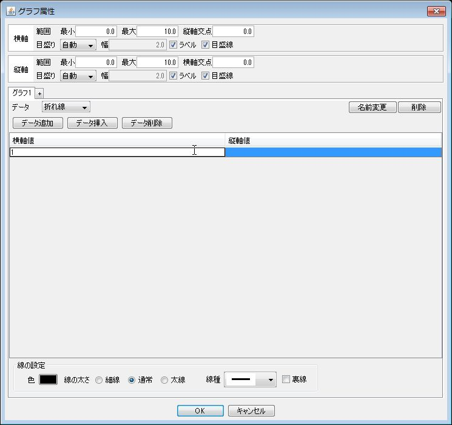

| 関数グラフ | データグラフ |
- 入力項目
項目 説明 名前 グラフの名前 横軸 最小値、最大値、縦軸との交点の値、目盛り(*1,*2) 横軸 最小値、最大値、縦軸との交点の値、目盛り(*1.*2) 関数 関数の式(TeXまたはMathML) 定数 関数の式で使用する定数 計算の属性 計算の範囲(*3,*4)、計算する点(*5) 線の属性 色、太さ、線種、裏線 - (*1) 目盛りの振り方は、自動、手動、なしから選べる
自動 適当な間隔で目盛り幅が計算される 手動 指定した幅で目盛りがふられる なし 目盛りは付けられない - (*2) 目盛りがふられる場合、目盛りにラベルをつけるか、目盛線を表示するかを設定できる
- (*3) x=定数のようにy軸に平行な直線の場合は「yの範囲」を選択する
- (*4) 軸よりも小さい範囲にだけグラフを描く場合は「軸の範囲を使う」のチェックをはずし、最小と最大を入力する
- (*5) 計算する点の数と点間の幅とから選んで指定できる
- (*1) 目盛りの振り方は、自動、手動、なしから選べる
- 関数グラフの例
項目 入力内容 名前 既定の名前 横軸 最小値=-2、最大値=3、縦軸との交点の値=0、目盛り自動 横軸 最小値=-10、最大値=10、縦軸との交点の値=0、目盛り自動 関数 関数の式 x^2*\sin(x*\pi) 定数 既定の定数\piを使用 計算の属性 自動 墨字モード
点字モード
- 入力項目
項目 説明 名前 グラフの名前 横軸 最小値、最大値、縦軸との交点の値、目盛り(*1,*2) 縦軸 最小値、最大値、縦軸との交点の値、目盛り(*1.*2) データ 横軸と縦軸の座標値 線の属性 色、太さ、線種、裏線 - (*1) 目盛りの振り方は、自動、手動、なしから選べる
自動の場合は、適当な間隔で目盛り幅が計算される
手動の場合は、指定した幅で目盛りがふられる
なしの場合は、目盛りは付けられない
- (*2) 目盛りがふられる場合、目盛りにラベルをつけるか、目盛線を表示するかを設定できる 力する
データ追加 ボタンをクリックして行を追加する
- 追加した行を選択して、横軸値と縦軸値を入力する
 - 1と2を繰り返して、データを追加する
- (*1) 目盛りの振り方は、自動、手動、なしから選べる
- データグラフの例
項目 入力内容 名前 既定の名前 横軸 最小値=-2、最大値=3、縦軸との交点の値=0、目盛り自動 横軸 最小値=-10、最大値=10、縦軸との交点の値=0、目盛り自動 データ (横軸値,縦軸値)=(1,1)(2,3)等 墨字モード
点字モード
|
墨字モード |
点字モード |